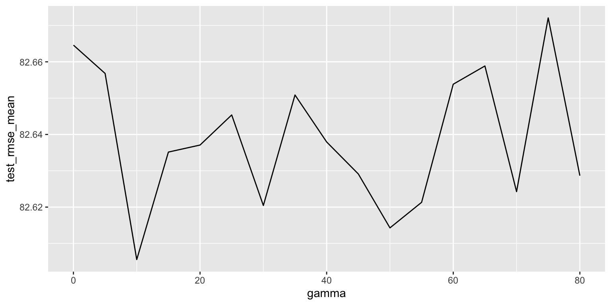

Tuning process and final model summary
data <- read.csv("data/train.csv") %>%
select(-classification) %>%
mutate_if(is.character, factor) %>%
mutate(ncessch = as.numeric(ncessch))
bonus <- read.csv("data/bonus_data_v2.csv") %>%
mutate(ncessch = as.numeric(ncessch)) %>%
mutate(locale = gsub("^.{0,3}", "", locale)) %>%
separate(col = locale, into = c("locale", "sublocale"), sep = ": ")
disc <- read_csv("data/disc_drop.csv") %>%
mutate(attnd_dist_inst_id = as.double(attnd_dist_inst_id))
## join data
data <- data %>%
left_join(bonus) %>%
left_join(disc)
Data was merged from three files:
Original Competition Training Dataset
Bonus Dataset with additional variables collected by zip code, NCES school IDs, state school IDs, and county levels
Supplemental small dataset of high school dropout rates and out-of-school suspension rates by state district IDs
Importantly, the bonus data includes the variables described in the original data description page, as well as the following:
rev_total)rev_local_total)rev_state_total)rev_fed_total)exp_total)exp_current_elsec_total)exp_current_instruction_total)exp_current_supp_serve_total)outlay_capital_total)salaries_total)benefits_employee_total)enrollment_fall_responsible)District financial data was obtained using the educationdata R package.
Lastly, district finance data was included in both its raw form, and transformed by dividing each revenue and expenditure value by the number of students the LEA was financially responsible for (e.g., exp_total/enrollment_fall_responsible)
rec <- recipe(score ~ ., train) %>%
step_mutate(tst_dt = as.numeric(lubridate::mdy_hms(tst_dt)),
lang_cd = case_when(lang_cd == "S" ~ "S", TRUE ~ "E"),
pupil_tch_ratio = as.numeric(pupil_tch_ratio),
pupil_tch_ratio = as.numeric(pupil_tch_ratio),
pupil_tch_rate = case_when(pupil_tch_ratio < 18 ~ 1,
pupil_tch_ratio < 25 ~ 2,
pupil_tch_ratio < 30 ~ 3,
TRUE ~ 4),
pupil_tch_rate = as.factor(pupil_tch_rate)) %>%
step_rm(contains("id"), ncessch, ncesag, lea_name, sch_name) %>%
step_mutate(hpi = as.numeric(hpi),
lat = round(lat, 2),
lon = round(lon, 2),
median_income = log(median_income),
frl_prop = fr_lnch_prop + red_lnch_prop,
schl_perf = case_when(sch_percent_level_1 + sch_percent_level_2 > sch_percent_level_3 + sch_percent_level_4 ~ 1,
TRUE ~ 0),
over_100 = under_200 + over_200) %>%
step_interact(terms = ~ lat:lon) %>%
step_rm(fr_lnch_prop, red_lnch_prop) %>%
step_string2factor(all_nominal()) %>%
step_zv(all_predictors()) %>%
step_unknown(all_nominal()) %>%
step_medianimpute(all_numeric()) %>%
step_dummy(all_nominal(), one_hot = TRUE) %>%
step_interact(~ exp_current_supp_serve_total.x:sp_ed_fg_Y) %>%
step_interact(~ lang_cd_S:p_hispanic_latino) %>%
step_nzv(all_predictors(), freq_cut = 995/5)
baked_train <- prep(rec) %>%
bake(train)
train_x = data.matrix(baked_train[, -73])
train_y = data.matrix(baked_train[, 73])
pupil_tch_ratio) is binned and treated as a factor to remove noise (pupil_tch_rate). Both ratio and binned version of the variable remain in the data.lat) and longitude (lon) are rounded to two decimal places to reduce noise and limit precision to within 2/3 of a mile.frl_prop given their expected similar effects.
fr_lnch_prop) and reduced lunch proportions (red_lnch_prop) are removed from the data set in lieu of their combined proportion.schl_perf) is created that denotes whether the percentage of students reaching proficiency on the EOY state test exceeds the percentage of students that fall below proficiency standards.lang_cd) and percentage of Hispanic/Latino students at the school (p_hispanic_latino). The justification is that Spanish-speaking students are expected to receive less effective supports in schools in which they are a greater minority.Because the loss reduction (gamma) and maximum tree depth are highly dependent on one another, two approaches were taken to tune the initial model. One approach involved first tuning loss reduction, followed by tree depth and hessian weights. The other involved tuning tree complexity and hessian weights without any severe loss reduction regularization, and then pruning it back by tuning gamma. All tuning was done using the full training dataset.
baked_train <- prep(rec) %>%
bake(train)
train_x = data.matrix(baked_train[, -73])
train_y = data.matrix(baked_train[, 73])
grid <- expand.grid(loss_reduction = seq(0, 80, 5))
gamma_mods <- map(grid$loss_reduction, ~{
xgb.cv(
data = train_x,
label = train_y,
nrounds = 10000,
objective = "reg:squarederror",
early_stopping_rounds = 50,
nfold = 10,
verbose = 1,
params = list(
eta = 0.1,
gamma = .x,
nthread = 24
)
)
})
iter train_rmse_mean train_rmse_std test_rmse_mean test_rmse_std
1: 452 77.0087 0.0983 82.6056 0.6781
2: 448 77.0472 0.0837 82.6143 0.4099
3: 445 77.0877 0.0555 82.6204 0.5452
4: 524 76.3820 0.1016 82.6213 0.5638
5: 436 77.1400 0.0551 82.6243 0.3445
6: 452 77.0063 0.0802 82.6287 0.5083
7: 416 77.3305 0.0714 82.6291 0.7941
8: 447 77.0524 0.0613 82.6352 0.5932
9: 424 77.2553 0.0888 82.6371 0.8803
10: 465 76.9038 0.0983 82.6379 0.5911
eta gamma
1: 0.1 10
2: 0.1 50
3: 0.1 30
4: 0.1 55
5: 0.1 70
6: 0.1 80
7: 0.1 45
8: 0.1 15
9: 0.1 20
10: 0.1 40
As indicated in the results, a gamma of 10 produced the best fit the to test folds. A gamma of 50 was considered as a potential alternative given its lower RMSE SD; however, 50 was considered too extreme of a regularization setting.
A follow-up gamma tuning process was conducted with a narrowed range of 5 to 15 and is reported below.
grid <- expand.grid(loss_reduction = seq(5, 15, 1))
iter train_rmse_mean train_rmse_std test_rmse_mean test_rmse_std
1: 426 77.1033 0.0673 82.6085 0.5934
2: 440 76.9364 0.0804 82.6233 0.6727
3: 411 77.2343 0.0918 82.6301 0.5782
4: 470 76.7071 0.0412 82.6407 0.4116
5: 452 76.8494 0.0946 82.6417 0.5207
6: 497 76.4667 0.0793 82.6423 0.3931
7: 478 76.6126 0.0703 82.6454 0.3906
8: 427 77.0770 0.0583 82.6646 0.5045
9: 389 77.4035 0.1140 82.6658 0.6899
10: 381 77.5321 0.0441 82.6747 0.4971
eta gamma
1: 0.1 12
2: 0.1 13
3: 0.1 15
4: 0.1 14
5: 0.1 11
6: 0.1 9
7: 0.1 6
8: 0.1 8
9: 0.1 7
10: 0.1 5After second round of tuning, a gamma value of 12 produced the best fit.
Best gamma value = 12
RMSE/SD to beat = 82.6085/0.5934
# Set learning rate, tune tree specific parameters
grid <- grid_max_entropy(min_n(c(4, 12)), # min_child_weight
tree_depth(), # max_depth
size = 30)
head(grid)
# A tibble: 6 x 2
min_n tree_depth
<int> <int>
1 12 13
2 10 12
3 7 12
4 8 5
5 9 14
6 5 7tree_mods <- map2(grid$min_n, grid$tree_depth, ~{
xgb.cv(
data = train_x,
label = train_y,
nrounds = 5000,
objective = "reg:squarederror",
early_stopping_rounds = 50,
nfold = 10,
verbose = 1,
params = list(
eta = 0.1,
gamma = 12,
min_child_weight = .x,
max_depth = .y,
nthread = 24
)
)
})
iter train_rmse_mean train_rmse_std test_rmse_mean test_rmse_std
1: 426 77.1033 0.0673 82.6085 0.5934
2: 440 76.9364 0.0804 82.6233 0.6727
3: 411 77.2343 0.0918 82.6301 0.5782
4: 470 76.7071 0.0412 82.6407 0.4116
5: 452 76.8494 0.0946 82.6417 0.5207
6: 497 76.4667 0.0793 82.6423 0.3931
7: 478 76.6126 0.0703 82.6454 0.3906
8: 427 77.0770 0.0583 82.6646 0.5045
9: 389 77.4035 0.1140 82.6658 0.6899
10: 381 77.5321 0.0441 82.6747 0.4971
eta gamma
1: 0.1 12
2: 0.1 13
3: 0.1 15
4: 0.1 14
5: 0.1 11
6: 0.1 9
7: 0.1 6
8: 0.1 8
9: 0.1 7
10: 0.1 5A min_child_weight of 42 and max_depth of 9 demonstrate the best fit to the test folds and have a low SD relative to other hyperparameter tunings.
Tuning Summary:
gamma = 12
min_child_weight = 42
max_depth = 9
Final RMSE/SD to beat: 82.5145/0.4865
tree_mods <- map2(grid$min_n, grid$tree_depth, ~{
xgb.cv(
data = train_x,
label = train_y,
nrounds = 5000,
objective = "reg:squarederror",
early_stopping_rounds = 50,
nfold = 10,
verbose = 1,
params = list(
eta = 0.1,
min_child_weight = .x,
max_depth = .y,
nthread = 24
)
)
})
iter train_rmse_mean train_rmse_std test_rmse_mean test_rmse_std
1: 476 77.7006 0.0998 82.5124 0.6930
2: 164 76.2352 0.1608 82.5302 0.6939
3: 176 76.5310 0.1472 82.5314 0.7656
4: 386 76.8895 0.0762 82.5397 0.7031
5: 353 77.3357 0.1209 82.5406 0.7410
6: 841 78.0260 0.0806 82.5474 0.7158
7: 772 78.1773 0.0749 82.5510 0.5863
8: 180 76.7896 0.0835 82.5683 0.4212
9: 765 77.9577 0.0949 82.5731 0.8062
10: 218 76.6201 0.0898 82.5891 0.6832
min_child_weight max_depth
1: 31 6
2: 50 10
3: 33 9
4: 39 7
5: 47 7
6: 41 5
7: 31 5
8: 42 9
9: 18 5
10: 18 8Without any gamma specification, the best min_child_weight value was 31 and the best max_depth was 6. They will be retained for the gamma tuning process.
RMSE/SD = 82.5124/0.6930
iter train_rmse_mean train_rmse_std test_rmse_mean test_rmse_std
1: 533 77.3554 0.0682 82.5224 0.5267
2: 469 77.7686 0.0927 82.5352 0.8634
3: 471 77.7354 0.0776 82.5378 0.4401
4: 524 77.4174 0.0992 82.5383 0.6807
5: 499 77.5734 0.0750 82.5462 0.8300
6: 517 77.4582 0.0884 82.5475 0.7874
7: 524 77.3996 0.0529 82.5575 0.5187
8: 514 77.4428 0.1058 82.5591 0.4798
9: 460 77.8339 0.0813 82.5609 0.5974
10: 473 77.7356 0.0656 82.5616 0.5277
eta gamma min_child_weight max_depth
1: 0.1 5 31 6
2: 0.1 80 31 6
3: 0.1 45 31 6
4: 0.1 50 31 6
5: 0.1 75 31 6
6: 0.1 20 31 6
7: 0.1 0 31 6
8: 0.1 25 31 6
9: 0.1 35 31 6
10: 0.1 10 31 6The best RMSE was obtained with a gamma value of 5. Thus a narrower grid search was conducted around this value.
iter train_rmse_mean train_rmse_std test_rmse_mean test_rmse_std
1: 483 77.6636 0.0682 82.5199 0.5321
2: 580 77.0910 0.0922 82.5308 0.7158
3: 526 77.4045 0.0615 82.5482 0.5523
4: 530 77.3647 0.0591 82.5531 0.7015
5: 561 77.1607 0.0504 82.5531 0.5370
6: 505 77.5384 0.1148 82.5568 0.7819
7: 524 77.3996 0.0529 82.5575 0.5187
8: 475 77.7281 0.0901 82.5679 0.6583
9: 511 77.4975 0.1031 82.5682 0.6308
10: 498 77.6087 0.0835 82.5774 0.5429
eta gamma min_child_weight max_depth
1: 0.1 1 31 6
2: 0.1 8 31 6
3: 0.1 4 31 6
4: 0.1 9 31 6
5: 0.1 3 31 6
6: 0.1 10 31 6
7: 0.1 0 31 6
8: 0.1 6 31 6
9: 0.1 2 31 6
10: 0.1 5 31 6After fine tuning gamma, the best RMSE was obtained using a value of 1. However, RMSE values did not appear to converge towards a particular value, as illustrated in the plot. Consequently, some caution is warranted for these hyperparameter values.
Best RMSE/SD = 82.5199/0.5321
Approach #1: RMSE/SD = 82.5145/0.4865 Approach #2: RMSE/SD = 82.5199/0.5321
Tuning gamma first, followed by the tree hyperparameters yielded better RMSE during the cross validations. Thus, the hyperparameter values generated through the first tuning approach were retained.
Updated model summary:
gamma = 12
max_depth = 6
min_child_weight = 10
After tuning loss reduction and the tree hyperparameters, the stochastic parameters were tuned to identify the best subsampling of columns and cases.
sample_mods <- map2(grid$mtry, grid$sample_size, ~{
xgb.cv(
data = train_x,
label = train_y,
nrounds = 5000,
objective = "reg:squarederror",
early_stopping_rounds = 50,
nfold = 10,
verbose = 1,
params = list(
eta = 0.1,
gamma = 12,
max_depth = 6,
min_child_weight = 10,
colsample_bytree = .x,
subsample = .y,
nthread = 24
)
)
})
iter train_rmse_mean train_rmse_std test_rmse_mean test_rmse_std
1: 180 76.8111 0.1001 82.4945 0.4857
2: 162 77.0779 0.1225 82.5165 0.7459
3: 169 76.9934 0.0828 82.5251 0.5528
4: 176 77.1740 0.1421 82.5602 0.6855
5: 168 77.0995 0.1517 82.5628 0.7122
6: 190 76.7031 0.0754 82.5678 0.2103
7: 164 77.2467 0.0799 82.5744 0.4960
8: 154 77.5365 0.0981 82.5795 0.5072
9: 166 77.4868 0.1162 82.5908 0.5536
10: 178 77.4601 0.0839 82.5981 0.4447
gamma colsample_bytree subsample
1: 10 0.7568 0.9742
2: 10 0.8865 0.9124
3: 10 0.8919 0.8517
4: 10 0.4216 0.9423
5: 10 0.7514 0.8682
6: 10 0.6432 0.9851
7: 10 0.5676 0.9561
8: 10 0.8054 0.7719
9: 10 0.4541 0.8728
10: 10 0.4216 0.8013Best values for colsample_bytree and subsample appear to be around values >.70. A narrower grid search was completed and is summarized below. Notably, gamma was mistakenly specified as 10 (instead of 12) during this tuning process. However, this wasnt expected to dramatically shift the tenable range of best stochastic parameter values during fine tuning.
iter train_rmse_mean train_rmse_std test_rmse_mean test_rmse_std
1: 201 76.2962 0.1157 82.5002 0.7741
2: 164 76.9645 0.0987 82.5245 0.3507
3: 202 76.2556 0.0651 82.5344 0.4445
4: 201 76.3411 0.1021 82.5375 0.7820
5: 171 76.8405 0.1879 82.5563 1.0331
6: 204 76.4118 0.0689 82.5563 0.4480
7: 182 76.6834 0.0717 82.5671 0.5603
8: 152 77.5125 0.0959 82.5717 0.7425
9: 162 77.1778 0.0651 82.5793 0.4789
10: 143 77.6607 0.1106 82.5840 0.8543
gamma colsample_bytree subsample
1: 12 0.8919 0.9270
2: 12 0.9730 0.9232
3: 12 0.9838 0.9830
4: 12 0.8703 0.9882
5: 12 1.0000 0.8716
6: 12 0.7243 0.9959
7: 12 0.7838 0.9482
8: 12 0.7838 0.8227
9: 12 0.8973 0.8537
10: 12 0.9514 0.8056Best value of colsample_bytree = .892
Best value of subsample = .927
Updated model summary:
gamma = 12
max_depth = 6
min_child_weight = 10
colsample_bytree = .892
subsample = .927
r <- seq(0.0001, 0.1, length.out = 20)
lr_mods <- map(lr, function(learn_rate) {
xgb.cv(
data = train_x,
label = train_y,
nrounds = 5000,
objective = "reg:squarederror",
early_stopping_rounds = 50,
nfold = 10,
verbose = 0,
params = list(
eta = learn_rate,
gamma = 12,
max_depth = 6,
min_child_weight = 10,
colsample_bytree = 0.8918919,
subsample = 0.9270078,
nthread = 24
)
)
})
The learning rate could not be re-tuned under the time constraints, so it was lowered to .04, which was identified to be the best learning rate during tuning of early models.
bst <- xgb.cv(
data = train_x,
label = train_y,
nrounds = 10000,
objective = "reg:squarederror",
early_stopping_rounds = 50,
nfold = 10,
verbose = 1,
params = list(
eta = .04,
gamma = 12,
max_depth = 6,
min_child_weight = 10,
colsample_bytree = 0.8918919,
subsample = 0.9270078,
nthread = 24))
iter train_rmse_mean train_rmse_std test_rmse_mean test_rmse_std
1: 1119 77.19118 0.05822473 82.45213 0.4973091Best iteration was 1119. Only 1119 trees will be specified in final fit.
final_mod <- xgboost(
data = train_x,
label = train_y,
nrounds = 1119,
objective = "reg:squarederror",
verbose = 1,
params = list(
eta = .04,
gamma = 12,
max_depth = 6,
min_child_weight = 10,
colsample_bytree = 0.8918919,
subsample = 0.9270078,
nthread = 24))
baked_test <- prep(rec) %>%
bake(test)
test_x = data.matrix(baked_test[, -73])
pred <- predict(final_mod, as.matrix(test_x))
actual <- baked_test$score
Metrics::rmse(actual, pred)
[1] 78.86593After tuning hyperparameters, reducing the learning rate, and determining the number of trees, the final RMSE on the test split is 78.86593. This was only slightly higher than the RMSE calculated during the final fit to the training data, which was 77.51970.
This model was submitted 20 minutes late to the Kaggle competition, but received a RMSE of 81.65183 on the 30% test set for the public leaderboard, and an RMSE of 82.07486 for the private leaderboard.